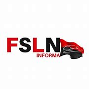

El regreso del FSLN.
La victoria electoral del Frente Sandinista en las presidenciales de noviembre de 2006 se produce fundamentalmente por la confluencia de dos factores: el descrédito creciente de la derecha liberal que había aplicado a rajatabla las directrices del Consenso de Washington durante más de 15 años (1990-2006), provocando el hartazgo ciudadano; la nueva política de alianzas del FSLN, poco escrupulosa pero sumamente eficaz, que le permitió ampliar su base electoral gracias al pacto realizado con antiguos enemigos, como la cúpula de la Iglesia (personificada en el cardenal Obando) y un sector de la ex Contra-revolución.
Acerca de nosotros¿Un nuevo modelo político?
El Ejecutivo de Daniel Ortega ha denominado oficialmente a su proyecto de gobierno como «Modelo de Participación y Poder Ciudadano». En parte, parece cierto que en estos años se han abierto instancias de comunicación con las bases, lo que ha permitido un mayor flujo de demandas desde lo local hacia arriba. A su vez, el liderazgo que ha asumido la Juventud Sandinista en la ejecución de algunos programas sociales ha beneficiado a la imagen pública del Frente.
Sin embargo, también es innegable que se ha producido un proceso de concentración de poderes en manos del matrimonio Ortega-Murillo. La imagen de dirección colectiva de la década del ochenta ha sido sustituida por un liderazgo de corte personalista en el que Daniel Ortega conserva la imagen carismática y el control de la política económica y exterior, mientras que Rosario Murillo opera como una suerte de «primera ministra» de facto, con amplio control de la agenda social y comunicacional (es la vocera del gobierno). El arrinconamiento de una gran parte de la vieja guardia sandinista que todavía permanecía en el Frente es el dato más significativo en este sentido.
Política social
El terreno donde mayor reconocimiento -incluso desde algunos sectores de la oposición- ha cosechado el gobierno sandinista ha sido en el ámbito social, con la puesta en marcha de diversos programas dirigidos a la población más desfavorecida. Aunque esto no ha supuesto un cambio de paradigma en materia social, es indudable que se han producido cambios apreciables en comparación con el abandono sufrido en los noventa.
El Ejecutivo de Ortega asegura que en los últimos 4 años ha logrado reducir la pobreza rural en más de 6 puntos y la desnutrición crónica a la mitad (del 22% en 2009 al 11,6% en 2013). A su vez, la CEPAL ha situado a Nicaragua entre los países que más han reducido la desigualdad en la región.
Pilares del modelo económico.
La política exterior es uno de los terrenos donde con mayor claridad se percibe la postura ambivalente del gobierno de Ortega. La apuesta en 2007 por incorporarse al ALBA (expresión del modelo de integración más revolucionario hasta la fecha en América Latina) no supuso la ruptura del Tratado de Libre Comercio con Estados Unidos, vigente desde hace una década.
El Ejecutivo del FSLN continúa por tanto manteniendo un difícil equilibrio sobre el trapecio político, sujetando una pértiga que se inclina hacia la derecha, cuando el gran capital -incluidos algunos «empresarios sandinistas»- le presiona para que permanezca en el TLC, mientras que por la izquierda la supervivencia le aboca a seguir integrado en el ALBA, vía principal de transmisión de los recursos venezolanos.
Los interminables apagones eléctricos de la época de la derecha liberal también fueron superados gracias al apoyo vital del gobierno venezolano, a pesar de que el infame servicio brindado por la española Unión Fenosa no ha terminado desembocando en una deseada nacionalización. En este campo, desde el FSLN consideran que no es tiempo de nacionalizaciones porque hay que evitar «generar zozobra con el sector privado», como nos puntualiza Carlos Fonseca Terán, de la Secretaría de Relaciones Internacionales del Frente, afirmación muy significativa que retrata las coordenadas en las que hoy día se mueve el sandinismo.
Pero el tema estrella de actualidad en Nicaragua es la promesa de la construcción de un canal interoceánico que conecte el Atlántico con el Pacífico. El viejo sueño centenario ha sido rescatado por el Ejecutivo de Ortega, consciente de que en el imaginario colectivo y popular siempre fue considerado una vía indiscutible para «salir de la pobreza y el subdesarrollo». Los detractores, en consecuencia, son minoría (grupos ambientalistas y la izquierda más consecuente), a pesar de que el modelo de concesión a un empresario chino quiebra el concepto de soberanía nacional. Los más críticos se atreven a señalar a la familia Ortega como la futura beneficiaria oculta del proyecto.
Entre el TLC y el ALBA
La orientación liberal en materia económica se ha mantenido a grandes rasgos, según el reputado economista Adolfo Acevedo. Esto se evidencia, en primera instancia, en el mantenimiento de la alianza con los grandes grupos empresariales (nacionales y extranjeros). El mantenimiento del Tratado de Libre Comercio con Estados Unidos y la subordinación al FMI -desaprovechando la debilidad de este organismo a principios de siglo- corroboran esta idea. A esto, hay que agregar dos reformas tributarias negociadas con el gran capital para reducir sus impuestos, como recuerda Acevedo.
En la misma línea, el trabajo conjunto con el sindicalismo agrario liderado por la Asociación de Trabajadores del Campo (ATC) ha propiciado algunas mejoras en las condiciones de vida del sector campesino, destacándose dos programas: el citado Bono Productivo y el Programa Crisol (otorgamiento de más de 100.000 créditos a familias campesinas con más facilidades que la banca privada y con el compromiso estatal de compra a los pequeños productores), según nos manifiesta Edgardo García, Secretario General de la ATC.
La ayuda bolivariana, de hecho, le ha permitido la creación de ALBANISA, complejo empresarial estratégico desde el que se están financiando diferentes emprendimientos sociales y económicos. Los resultados, sin embargo, han sido limitados, ya que según Adolfo Acevedo la magnitud de la cooperación venezolana podía haber sido la palanca para una reorientación profunda del modelo económico.
FRENTE SANDINISTA DE LIBERACIÓN NACIONAL
FSLN
FSLN
FSLN
FSLN
Que dicen de nosotros?

FRENTE SANDINISTA DE ELIBERACIÓN NACIONAL
FSLN
El hombre que de su patria no exige un palmo de tierra para su sepultura, merece ser oído, y no sólo ser oído sino también creído.
FRENTE SANDINISTA DE LIBERACIÓN NACIONAL
FSLN
Nosotros iremos hacia el sol de la libertad o hacia la muerte; y si morimos, nuestra causa seguirá viviendo. Otros nos seguirán.